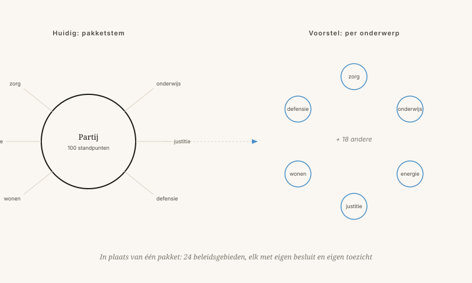

Wat is er mis met partijpolitiek?
Een alternatief: Nova Democratia, waarin per onderwerp wordt beslist door wie er iets zinnigs over te zeggen heeft.
Door Jacobus van Merksteijn · 12 min lezen · 23 mei 2026

Een lege zaal — wachtend op besluitvorming per onderwerp
De drie kwalen van partijpolitiek
Partijen ontstonden in de negentiende eeuw om belangen te bundelen toen kiezers nog geen informatie konden vergaren. Vandaag heeft elke kiezer een telefoon met meer kennis dan een minister in 1950.
Nova Democratia: beslissen per onderwerp
Nova Democratia is een bestuursvorm waarin per onderwerp beslist wordt, door mensen die op dát onderwerp competentie en draagvlak hebben aangetoond. Geen partijen, wel 24 beleidsgebieden met een eigen kringloop van voorstellen, toetsing en besluit.
De drie kernprincipes: meetbare prijs-prestatie, onafhankelijke steekproefcontroles, en welvaart als hoofddoel — waarbij ook respect en eigenwaarde meetellen.

Wat als de snelheidslimiet op de agenda staat?
Onder het huidige systeem stemmen partijen voor of tegen op basis van hun algemene profiel. Onder Nova Democratia wordt de vraag opgesplitst in meetbare componenten.
Geen partijdiscipline, geen ideologie
Pas als al deze cijfers er liggen, beslissen burgers in dat beleidsgebied. Wel een eerlijke afweging op meetbare grond.
Dit is geen utopie — maar ook niet zonder risico
De drie grootste risico's zijn reëel en verdienen aandacht:
- Wie bewaakt de bewakers? Wie bepaalt of een steekproefcontrole eerlijk is uitgevoerd?
- Versplintering. Als elk onderwerp apart wordt beslist, hoe blijft het geheel coherent? Iemand moet de samenhang bewaken.
- Tijd. Burgers hebben geen tijd om over 24 onderwerpen mee te denken. Hoe voorkomt u dat alleen lobbyisten stemmen?
Verband met het 7D-denkraam
In het 7D-model is een samenleving een systeem met meerdere assen tegelijk. G: wat op gemeenteniveau werkt, kan op landniveau falen. N: veelvoud van keuzes per land is een experimenteerveld, geen luxe. Partijpolitiek wist dat veelvoud uit. Nova Democratia herstelt het.
Wat is er mis met partijpolitiek?
Nova Democratia stelt voor per onderwerp te beslissen, met meetbare prijs-prestatie en zonder pakketstemmen.
Partijen zijn ontstaan in de negentiende eeuw om belangen te bundelen. Vandaag heeft elke kiezer een telefoon met meer kennis dan een minister in 1950. Toch zitten we nog vast aan drie structurele kwalen: pakketstemmen (u krijgt tien dingen waar u niet om vroeg om twee dingen te krijgen die u wilt), loyaliteit boven inhoud (politici stemmen niet wat ze denken maar wat de partij denkt) en de vier-jaarlijkse waan (beleid op de horizon van de volgende verkiezing, niet van de volgende generatie).
Nova Democratia is een bestuursvorm met 24 beleidsgebieden, elk met een eigen kringloop van voorstellen, toetsing en besluit. Per onderwerp beslist wie op dát onderwerp competentie en draagvlak heeft aangetoond. De drie kernprincipes zijn meetbare prijs-prestatie, onafhankelijke steekproefcontroles, en welvaart als hoofddoel — waarbij ook respect en eigenwaarde meetellen.
Een concreet voorbeeld: bij een snelheidslimiet liggen eerst vier meetbare vragen voor — veiligheid (50 tot 70 minder doden per jaar), reistijd (12 miljoen uur extra per jaar), CO₂ en economische belangen. Pas als die cijfers er liggen, beslissen burgers in dat beleidsgebied. Geen partijdiscipline, geen ideologie.
Geen utopie — maar ook niet zonder risico
De drie grootste risico's zijn reëel: wie bewaakt de bewakers, hoe blijft het geheel coherent bij 24 losse onderwerpen, en hoe voorkomt u dat alleen lobbyisten stemmen? Dít zijn de vragen die verdere uitwerking vragen. In het 7D-denkraam herstel Nova Democratia de N-waarde: het veelvoud van keuzes dat partijpolitiek uitwist.